Summary: This section describes how to use AU Strips to save chains of effects or entire source tracks to the library. It describes how to restore saved strips and manage the strip library.
| 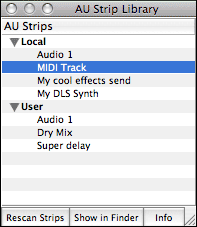 |
The effect strip library |
AU Lab has the ability to save chains of effects into an entity called an “AU Strip” file. These files are stored in a common location on the disk for easy access in other AU Lab documents or for use in other applications.
In addition to specifying a sequence of effects, the strip also encapsulates all of the parameters and properties of the effect when it was saved. A strip can also contain information about the source audio unit if the track is an Instrument or Generator track. Additionally, the strip can contain information about the sends of a track.
By using AU Strips, it becomes possible to save an entire instrument track or effect sequence for later reuse.
AU Lab displays AU Strips in a floating library window. To show this window, choose Show Strip Library from the Window menu.
AU Strips files are stored in either User/Library/Audio/Strips/ or /Library/Audio/Strips/. Additionally these strips may be located on a network volume. Network strip files will only be visible in the library if the Search network for presets preference is enabled.
The library displays a hierarchical list of the strips stored in these locations. These strips may renamed by clicking on an item and typing a new name. They may not be deleted from the library window. To remove a strip, select the name of the strip in the table and click the Show in Finder button. Delete the strip file manually in the finder and then click Rescan Strips in the Library window to update the hierarchy.
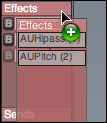
Creating a strip is simply a matter of drag and drop. To create a strip comprised of the effects in a track, click on the Effects heading of the track containing the effect chain you want to save. While holding the mouse down, drag the Effects section towards the right edge of the document window. You will see a ghosted representation of the section you are dragging and the cursor will display a green plus (+) symbol similar to the image on the right. If the Library window is not already open, it will open automatically.
Drag the strip to the Library. The save location is determined by where the strip is dropped.
| 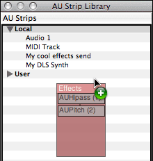 | 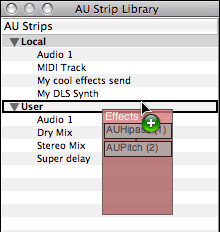 | 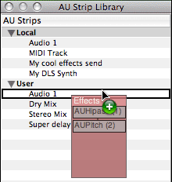 |
Prompt user for location |
Save to User location |
Replace Audio 1 with drag contents |
If the strip is not dragged to a specific location, the user will get a dialog asking where the strip should go. This dialog also allows the user to specify the name for the new strip.
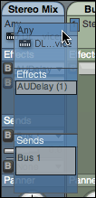 You can also create a strip that contains a track source for an instrument or generator track. Instead of starting the drag in the effect section, click in the source section of the track (the top most section). Any sends that the track has will also be preserved. The image displayed during the drag indicates what items will be saved in the strip. As the image at left indicates, this strip will contain a DLSMusicDevice source, an AUDelay effect, and a Bus.
To restore a strip from the library and place it in a document, drag the strip name from the library to the document window. If you are restoring an effect chain, drop the strip on the effect section of the track to receive the effect chain.
Restoring an effect chain
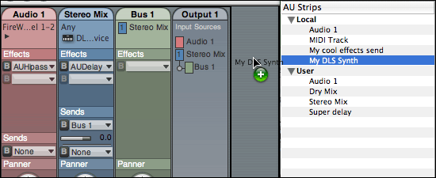Restoring an entire track
If you have a track strip that you want to restore, you may add it to the document by dragging it to an output. The tracks that are contained within the AU Strip file, will be added to that AU Lab document.
| 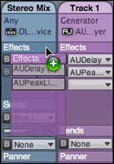 |
|
Dragging directly from one track to another |
Some strips may only be appropriate for specific types of documents - for example if a strip contains mono effects, it can only be dropped on a track (or bus) that has a mono source.
Note: You can drag an effect strip from an effect group directly to another track, bypassing the Library window entirely. This doesn’t create an AU Strip document, but rather just copies the state of the effects from the source track or bus, and adds a new collection of effects in that state, to the destination track or bus.
Additionally, you can reorder individual effects in a drag by holding down the command key and performing a drag operation. You will see feedback that indicates where the new effect will be dragged to.
| 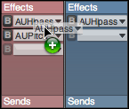 | 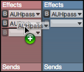 | 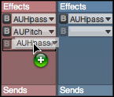 |
Starting a drag |
Moving an effect |
Replacing an effect |